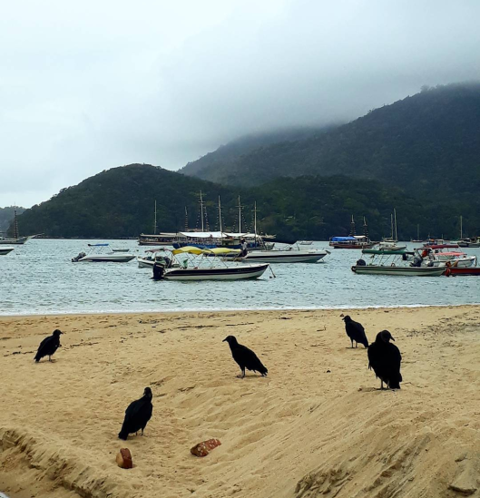

Este es el segundo texto de una serie de capítulos sobre Brasil que entrelazan las vivencias que tuve en mi paso por Río de Janeiro, Ilha Grande, Parati, São Sebastião e Ilhabela. No solo van a poder obtener información y detalles de los lugares sino que estos capítulos van a contener un hilo narrativo. Además, este escrito es muy particular ya que narra mis días en Ilha Grande, que a su vez, fueron los mismos que vivió Deborah Oliva quién escribió su visión en la sección Playas Colaborativas. ¡Espero que lo disfruten!
Ponta da Piedade, Ilha Grande.
Después de unos días maravillosos en Río de Janeiro, pero aún sintiendome perdido e intentando entender que es lo que tanto quería cambiar, me dirigí hasta la Rodoviaria y me tome el bus hasta Angra Dos Reis. El bus pertenece a la empresa Costa Verde y el tramo cuesta alrededor de 78 reales (aproximadamente 500 pesos argentinos). El pasaje se puede conseguir en las ventanillas de la terminal o en la página oficial de Rodoviaria. El micro me dejó justo enfrente de donde salen las balsas que conectan Angra Dos Reis y Abraão (Ilha Grande). Hay distintos horarios y precios que van desde los 16 reales a los 50 reales. Toda la información específica y actualizada de las balsas la pueden chequear AQUÍ.
Era una realidad, estaba por conocer una de las joyas de Brasil, pero sinceramente me sentía muy extraño. Tenía miles de dudas de como me iba a sentir solo en el hostel, en las excursiones, si iba a poder hacerme un grupo, si me iba a sentir cómodo conmigo. Otra vez esas auto-preguntas me estaban invadiendo. La balsa llegó y pude respirar paz apenas pise la arena, en Ilha Grande ni siquiera hay autos y se puede recorrer el pueblo tranquilamente a pie.
Me dirigí al Biergarten Hostel donde tenía realizada una reserva y mi primer sorpresa fue que en la recepción había un argentino ¿Y saben qué? En la barra, otro argentino. ¡Estamos en todos lados pense! En el lugar había personas de todas las nacionalidades, chilenos, uruguayos, colombianos, brasileños y hasta me sucedió una situación bizarrísima: los baños eran mixtos y saliendo desprevenido de la ducha me encontré con una chica brasileña que me hizo una pregunta acerca si la lluvia estaba caliente o fría. Al menos eso entendí. Lo gracioso es que no le supe contestar y ella tampoco supo decirme nada más. Pero bueno, hasta eso es divertido en vacaciones.
Abraão, Ilha Grande.
Eran las 16hs y si bien estaba muy cansado, preferí cambiarme e ir a pasear, como siempre que llegó a un lugar de playa nuevo, estaba ansioso. Me perdí por la Isla y para mi sorpresa, las playas estaban casi desiertas, y fue así que termine llegando a Praia de Crena, una playa de agua verdes emeralda que me recibió con un cantante y su guitarra dando un show de música típica brasileña, la mejor compañia para un atardercer perfecto. Esta playa, que cuenta con un pequeño restaurante, se sale de los circuitos turísticos, pero en mi opinión es una de las más bonitas, inclusive más linda que la famosa Lopes Mendes.
Buceo en Ilha Grande.
Los paseos estan un promedio de 70 reales y hay opciones muy variadas desde un tour llamado "Praias Paradisiacas", el snorkel en Laguna Azul o Laguna Verde y la famosísima Lopes Mendes. Yo decidi utilizar por segunda vez mi Licencia PADI, que obtuve en Malasia, y me anime a sumergirme en la Laguna Azul y en la Laguna Verde con la empresa Elite Dive Center. Fue una inmersión hermosa donde vi todo tipo de peces y unas cuantas tortugas y donde me tomaron una de las fotografías que mas amo: yo y una amiga "muito bonitinha", una "tartaruga". El precio que pague fueron 270 reales (80 dólares o 1600 pesos argentinos), bastante económico y la atención fue increíble. Venía de una mala experiencia en Perhentian donde el personal fue bastante maleducado y poco profesional, y aquí fue todo lo contrario, me sentí totalmente cuidado y que lo único que buscaban las personas a cargo era que pasemos un buen momento.
En esos días, hice también el tour "Praias Paradisiacas", que si bien, recorre lugares muy lindos, las mayorías de las playas estan abarrotadas de gente, menos "Praia Ponta de Piedade" que es una pequeña isla donde caminando se puede llegar a sectores hermosos y bien tranquilos. ¿Qué recomiendo entonces? La trilha a Lopes Mendes, Praia de Crena (se puede llegar a pie), Praia Preta (también se puede llegar caminando) y Praia Ponta de Piedade . ¿Tienen la licencia PADI? Entonces buceo.
Es la playa más famosa de Ilha Grande y se ubica al otro lado del pueblito de Abraão, para llegar podemos ir en barco o realizando un camino por la selva de 2:30hs. Siguiendo las palabras del reconocido Fito Paez "lo importante no es llegar, lo importante es el camino" decidí aventurarme a caminar, y sí, solo.
Me preparé mi mochilita, me puse cómodo y empece a caminar por las callecitas de Abraão hasta la puerta de la selva, de ahí en más, entre en otro mundo. La "trilha" o el camino suele estar fácilmente señalizado, pero debido a las fuertes lluvias de los días anteriores, el trayecto se encontraba confuso. Empece a andar y cada vez que me adentraba un poco más en la selva, mi sensación de paz aumentaba, estaba totalmente solo, en medio de la naturaleza ¿Qué más podía pedir? La tranquilidad era suprema, pero empezó a desdibujarse cuando la lluvia se hizo presente y las ramas de algunos árboles, semi rotas por las lluvias, comenzaron a tambalear. Respire y me dije: "Tranquilo, queda poco de caminata y nada va a salir mal". Segui caminando, un poco asustado y observando más las copas de los arbustos que el camino. Así fue que me choque con una hamaca un tanto terrorífica que estaba colgada en el medio de la trilha. Parecía una escena sacada de uno de los libros de Stephen King. La bordié y seguí andando sin darle más importancia.
Trilha a Lopes Mendes.
Todo se termino de complicar cuando delante mío se abrieron 3 caminos y ninguno señalizado, todo me hacia pensar que me había confundido, ya que lo que me habían dicho en la recepción del hostel era que la "trilha" estaba bien marcada. Volví para atras, camine y camine y la hamaca, que era mi punto de referencia, no estaba. Me desesperé, empece a correr, necesitaba un punto de referencia. Así fue que quede exhausto y la lluvia que se colaba entre las ramas caía con más fuerza en mi cara. Me desmoroné, tenía que asumir que estaba perdido.
Era como si mi mente se había proyectado literalmente en la realidad, todos los meses anteriores mi cabeza había sido un laberinto del cual no podía salir y la selva de Lopes Mendes me propiciaba el mismo malestar pero físicamente. No sabía donde ir, no podía pensar, estaba cansado y ya ni comida me quedaba. ¿Esta era la tranquilidad que quería? La tensión fue máxima cuando al rato de quedar sentado deshausiado en la rama de un árbol caído, vi un cartel que decía "Cuidado presencia de Yacares". Reaccioné, me pare inmediatamente y me esforcé por convencerme que quedarme quieto no era una opción.
Praia de Palmas, Ilha Grande, Brasil. Se encuentra de camino a Lopes Mendes.
Encaré nuevamente para el lugar donde me había encontrado con los 3 caminos. Luego de andar un rato largo, los tenía de vuelta enfrente, elegí el de la derecha. ¿Por qué? No sé. Segui caminando y salí de la espesura de la selva a un camino más abierto, los árboles ya no me ahogaban, pero todavía no sabia donde estaba. El ruido del mar se empezó a hacer presente después de andar 15 minutos en línea recta. Mis ojos se extasiaron cuando a lo lejos divise una pequeña porción de arena y un mar con olas gigantes de fondo. ¡Había llegado! ¿Qué había sucedido? Me había confundido y en vez de tomar el camino corto, tome el camino largo y sin señalizar. Pero ahí estaba, y la playa de más de 2 kilometros me sonreia entre morros y nubes. En mi cabeza sonó Gustavo Cerati, "tarda en llegar, pero al final, hay recompensa". El alma me volvió al cuerpo y me decidí a disfrutar lo que quedaba del día.
Me di cuenta que a veces la vida nos pone escenarios que nos representan, depués de tanta oscuridad estaba por encontrar la luz y eso lo entendí la noche siguiente en el único boliche del lugar, Aquario.
Esa noche había quedado en tomar algo en el bar y luego salir a bailar con una amiga chilena que había conocido en una de las excursiones. El punto de encuentro, por supuesto, la barra del bar del hostel. Para mi sorpresa, había unas 4 personas más y comenzamos a beber las mejores caipirinhas prepradas por Martín, el argentino, del que les hable antes. En ese momento, fue cuando María Fernanda, la chilena, se volteó y saludo a una chica que estaba sola en la otra mesa. Era la chica brasileña de la ducha. La misma que horas después me iba a confesar que sabía hablar un "poquito" de español y me iba a enseñar a bailar funk y yo a ella cuarteto y reaggeton. Charlando entre danza y danza, con un portuñol bizarrísimo, riendo y pasandola bien, se me pasó mi última noche en Ilha Grande.
"Cuando la noche es más oscura se viene el día en tu corazón" proclama una de las canciones emblemas del rock argentino. Y si algo aprendí en Ilha Grande es que se puede pasar del abismo y la oscuridad, a la paz y a la luz en un abrir y cerrar de ojos.
Era el turno de seguir mi viaje hacia Parati, y fue subiendo a la pequeña balsa para volver a Angra Dos Reis que tuve la postal más linda de toda mi estadía, la chica de la ducha me saludaba dulcemente desde el puerto y de fondo Ilha Grande, el lugar que más me había ayudado a conocerme. El capitan puso marcha y un sabor agridulce me invadió la garganta. No sería la última vez que nos ibamos a ver.